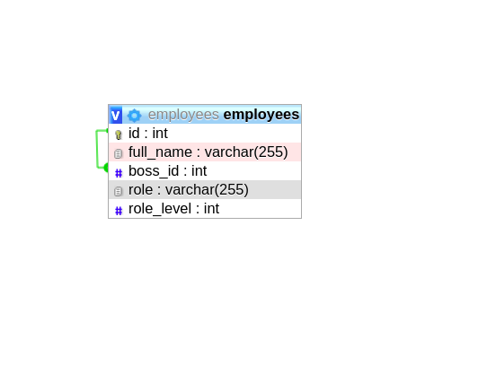
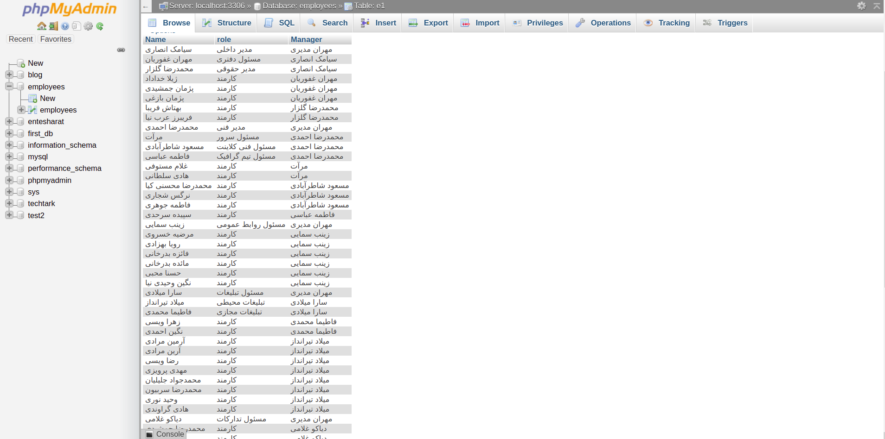
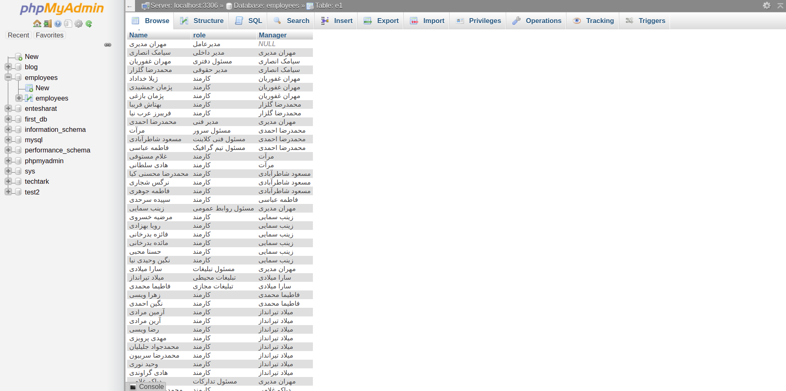
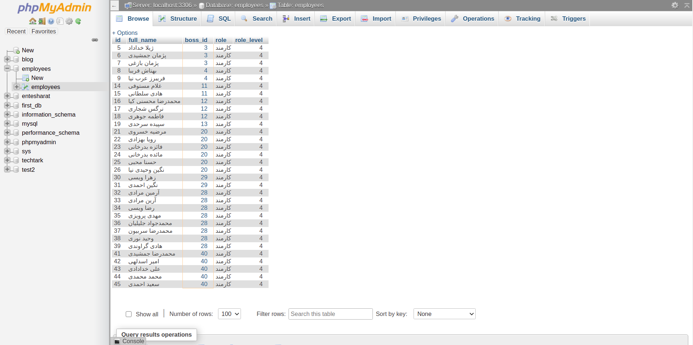
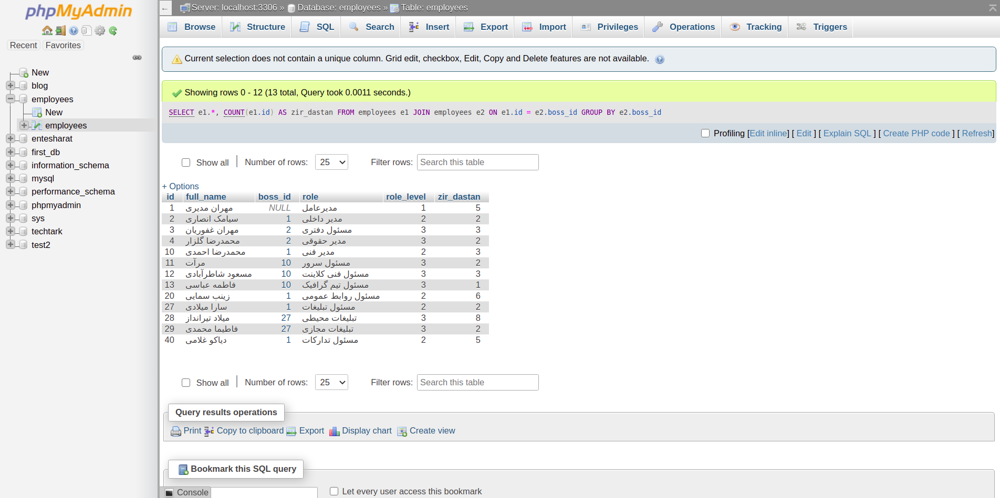

نمودار ER این مسئله را رسم کنید.

یک پرس وجو بنویسید که لیست کارمندان (به جز مدیرعامل) را به همراه نام مدیر ایشان چاپ کند.

SELECT e1.full_name AS Name, e1.role, e2.full_name AS Manager FROM employees e1
JOIN employees e2 ON e1.boss_id = e2.id
WHERE e1.role_level > 1
یک پرس وجو بنویسید که لیست همه کارمندان (از جمله مدیرعامل) را به همراه نام مدیر ایشان چاپ کند. برای
مدیر عامل، جلوی نام باید Null چاپ شود.

SELECT e1.full_name AS Name, e1.role, e2.full_name AS Manager FROM employees e1
LEFT OUTER JOIN employees e2 ON e1.boss_id = e2.id
یک پرس وجو بنویسید که نام کارمندانی که زیر دست ندارند را چاپ کند.

SELECT e1.* FROM employees e1
LEFT JOIN employees e2
ON e1.id = e2.boss_id
WHERE e2.boss_id IS NULL
یک پرس وجو بنویسید که برای هر کارمند، تعداد کارمندان زیر دست وی را چاپ کند.

SELECT e1.*, COUNT(e1.id) AS zir_dastan FROM employees e1
JOIN employees e2
ON e1.id = e2.boss_id
GROUP BY e2.boss_id